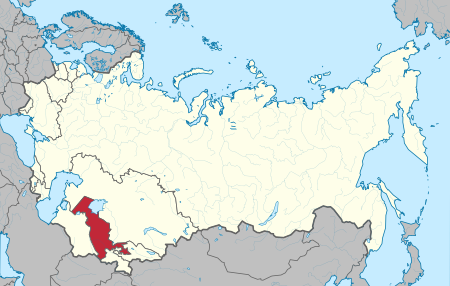

УсбССР
Узбе́кская Сове́тская Социалисти́ческая Респу́блика (узб. Ўзбекистон Совет Социалистик Республикаси, в современной орфографии O‘zbekiston Sovet Sotsialistik Respublikasi), сокращенно Узбе́кская ССР (узб. Ўзбекистон ССР) и УзССР (узб. ЎзССР), также именовался Сове́тским Узбекиста́ном (узб. Совет Ўзбекистони) — советская республика, одна из союзных республик Советского Союза..
Образована 27 октября 1924 года в результате так называемого национально-территориального размежевания в СССР. 31 августа 1991 года УзССР провозгласила независимость от СССР и преобразовалась в Республику Узбекистан.
Граничила с Киргизской Советской Социалистической Республикой, Туркменской Советской Социалистической Республикой, Казахской Советской Социалистической Республикой, Таджикской Советской Социалистической Республикой и Афганистаном.
Карта УсбССР c 27 октября 1924 года — 31 августа 1991 года года
[ОБРАТНО НА ГЛАВНУЮ] [ОБРАТНО К РЕСПУБЛИКАМ]